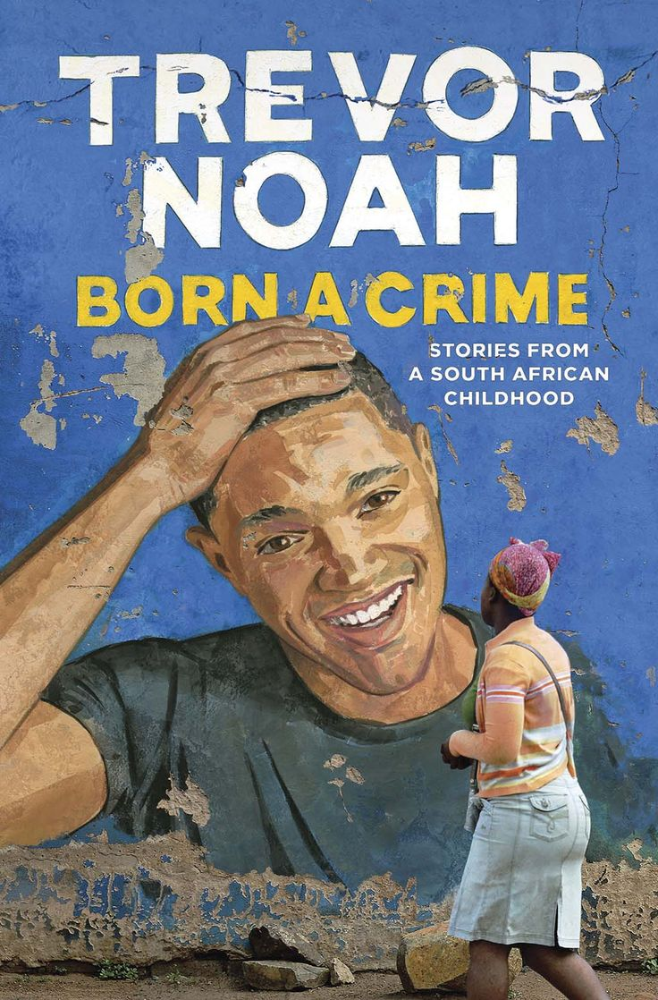

Born a Crime - Individual reflection
"Abel wanted a traditional marriage with a traditional wife… but he never fell in love with subservient women… 'He only wants a woman who is free because his dream is to put her in a cage.'”
Think about it, Abel was drawn to women with their spirit and independence. He didn't want someone meek or submissive. Yet, his ultimate desire was to confine them within the rigid structure of a "traditional marriage," effectively clipping their wings. This isn't just a reflection of apartheid-era South Africa; it echoes in present-day relationships too.
We often see individuals who were initially attracted to a partner's strength and ambition, only to later feel threatened by it. This can manifest in precise ways, discouragement of career goals, expectations of primary responsibility for domestic duties, or even emotional manipulation that slowly erodes a partner's self-governance. The "cage" isn't always bars; it can be built with expectations and control.
Abel's contradiction reveals a deep-seated patriarchal mindset. He appreciates the idea of a free woman, perhaps even enjoys the initial challenge and vibrancy she brings. But ultimately, he seeks the comfort and control of a traditional power dynamic. This resonates today when we see individuals who pay lip service to equality but struggle with truly equitable partnerships. They might admire a partner's success externally but resent the shift in traditional roles within the home.
Noah's insight is a powerful reminder to examine our own expectations and desires in relationships. Are we truly celebrating our partners' freedom, or do we conceal a suppressed desire to contain it? Recognizing this potential "cage of admiration" is the first step towards building truly equal and liberating partnerships.
